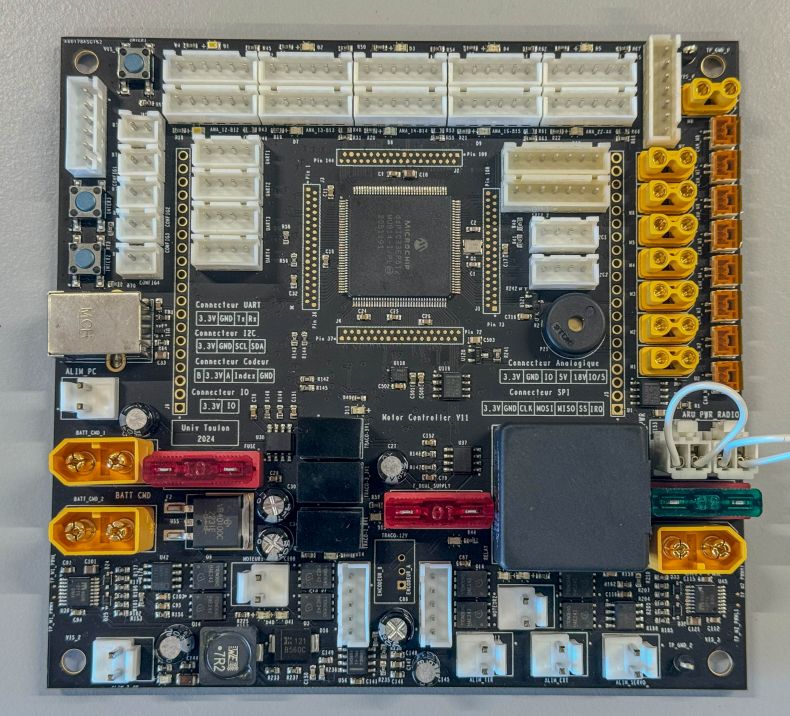
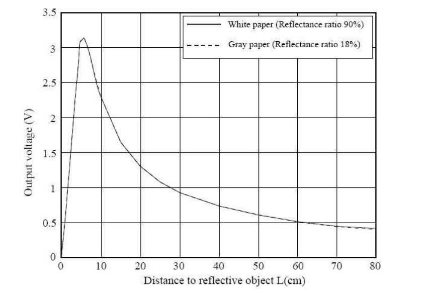

Autonomous Mobile Robot Using a 16-bit Microcontroller
Project Overview
This project was carried out at SeaTech Engineering School as part of a practical course on embedded systems and mobile robotics. The main objective was to program a mobile robot capable of operating autonomously using a 16-bit microcontroller. While the mechanical and electronic platform was already provided, my role focused on programming the robot’s core behavior using MPLAB and the C programming language.
Key Technologies Used
- MPLAB IDE (Microchip)
- dsPIC33EP512MU814 (16-bit microcontroller)
- Timers and interrupts
- PWM for motor control
- Analog-to-Digital Conversion (ADC)
- Infrared distance sensors (GP2Y0A21YK0F)
- State machine with GRAFCET-style logic
System Programming
Using MPLAB, I programmed the robot in embedded C with a modular, event-driven structure. The dsPIC33EP handled real-time tasks using timers and interrupts, ensuring consistent behavior and accurate reaction to sensor inputs and motion control commands.
Motor Control
The robot’s motors were driven through an H-bridge, controlled by PWM signals. I implemented acceleration ramps to gradually change the PWM duty cycle, ensuring smooth and precise motion without jerks or skidding.
Sensor Integration
The robot used five infrared distance sensors. I configured the ADC to convert analog signals to digital values, which were processed to estimate object distances in real time. These values were critical for the obstacle avoidance logic.
Autonomous Behavior
A structured state machine governed the robot’s actions, with each state reacting to real-time sensor input. The robot could move forward, turn, or stop depending on its environment. The logic was inspired by GRAFCET flow diagrams and implemented using conditional transitions and sensor thresholds.
Final Outcome
Once started, the robot operated autonomously for one minute, analyzing its surroundings and navigating while avoiding obstacles. LEDs on the chassis provided visual feedback for obstacle detection. This project effectively demonstrated the integration of microcontroller programming, sensor data processing, and control logic into a fully functional robotic system.